Folder
A folder or file collection.
Eighteen quiet line icons for Widget-owned meanings. App identities stay with verified custom or Windows shell icons; health remains an independent status layer.
A folder or file collection.

Source code or a developer project.
A command line or shell tool.
A database or structured store.
A document, note, or report.
An image or visual asset.
A video or playback destination.

Utilities, maintenance, or configuration tools.
A schedule, date, or recurring plan.
Preferences or application settings.
Open an application, file, folder, or URL.

A local or remote service with an optional health contract.
Users, access, and collaboration.
A project, workspace, or grouped work area.
A web destination without implying network health.

Data, reporting, and analytics.

Automated work or an agent workflow.
An experiment, prototype, or non-production tool.